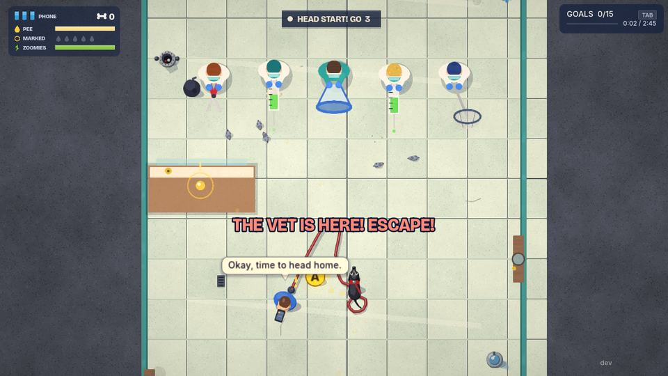
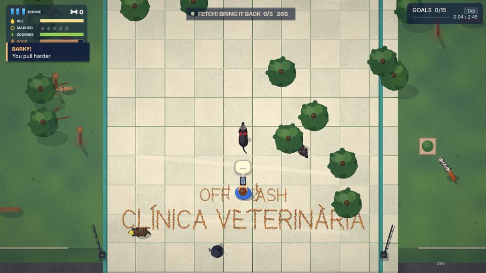

El Veterinari
A trip to the vet
An unassuming residential block with park benches, hydrants and other dogs out on morning errands, until the sliding glass doors of the Clínica Veterinària come into view. One glimpse of the checkup scale and the vet chases your pair back down the avenue cone-first.
- Off-leash stop
- CLÍNICA VETERINÀRIA (Fenced dog yard)
- Beat the clock
- Under 2:45
- Turnaround warning
- THE VET IS HERE! ESCAPE!
Screenshots





Goals (15)
- Mark 5 spots
- Have 4 good long sniffs
- Get the phone home without a scratch
- Get yourself home without a bump
- Get your business bagged
- Bring the ball back 3 times
- Say hello to 3 dogs
- Scarf down 2 dropped snacks
- Weigh in on the digital pet scale
- Escape the vet without getting bumped
- Land an x3 trick combo
- Snatch the liver treat jar from the reception desk
- Spell LEASH
- Find the hidden pernil
- Beat the clock (under 2:45)